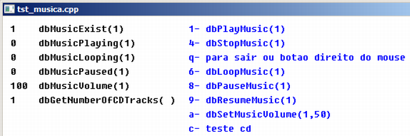

Curso completo de DarkGdk
Gameprog - Escola de programação de jogos digitais
Contato: gameprog.br@gmail.com
Fase 7.2
07.2 Música
07.2 Música
Segue abaixo o elenco de funções para tratamento de música:
dbLoadMusic( sArquivo, nMusica)
void dbLoadMusic ( char* szFilename, int iMusica )
Essa função carrega um arquivo de música no formato midi ou mp3 e identifica-a
com o handle nMusica pelo qual a música vai sofrer manipulações posteriores.
Ex.: dbLoadMusic ("c:\\gameprog\\gdkmedia\\musica\\amostra_musica.mp3",1);
---------------------------------------------------------------------------
dbDeleteMusic (nMusica)
void dbDeleteMusic ( int iMusic )
Essa função deleta a música especificada nMusica.
Ex.: dbDeleteMusic(1);
---------------------------------------------------------------------------
dbPlayMusic (nMusica)
void dbPlayMusic ( int iMusic )
Essa função toca a música especificada.
Ex.: dbPlayMusic(1);
---------------------------------------------------------------------------
dbLoopMusic (nMusica)
void dbLoopMusic ( int iMusic )
Essa função configura a música especificada para tocar continuamente. Se
a música estiver parada, essa função toca a música também.
Ex.: dbLoopMusic(1);
---------------------------------------------------------------------------
dbStopMusic (nMusica)
void dbStopMusic ( int iMusic )
Essa função pára a música especificada.
Ex.: dbStopMusic(1);
---------------------------------------------------------------------------
dbPauseMusic (nMusica)
void dbPauseMusic ( int iMusic )
Pausa a música especificada.
Ex.: dbPauseMusic(1);
---------------------------------------------------------------------------
dbResumeMusic ( nMusica)
void dbResumeMusic ( int iMusic )
Continua com a execução da música especificada que foi pausada previamente.
Ex.: dbResumeMusic(1);
---------------------------------------------------------------------------
dbSetMusicVolume (nMusica, nVolume)
void dbSetMusicVolume ( int iMusic, int iVolume )
Configura o volume (nVolume) de som da música especifida (nMusica);
Ex.: dbSetMusicVolume (1,50);
---------------------------------------------------------------------------
dbMusicExist ( nMusica)
int dbMusicExist ( int iMusic )
Retorna 1 caso a música especificada exista.
Ex.:
dbText (10,10,dbStr (dbMusicExist(1))); dbText (50,10, "dbMusicExist(1)" );
---------------------------------------------------------------------------
dbMusicPlaying (nMusica)
int dbMusicPlaying ( int iMusic )
Retorna 1 caso a música especificada esteja tocando.
Ex.:
dbText (10,30,dbStr (dbMusicPlaying(1))); dbText (50,30, "dbMusicPlaying(1)" );
---------------------------------------------------------------------------
dbMusicLooping (nMusica)
int dbMusicLooping ( int iMusic )
Retorna 1 caso a música especificada esteja configurar para tocar continuamente.
Ex.:
dbText (10,50,dbStr (dbMusicLooping(1))); dbText (50,50, "dbMusicLooping(1)" );
---------------------------------------------------------------------------
dbMusicPaused (nMusica)
int dbMusicPaused ( int iMusic )
Retorna 1 caso a música especificada esteja pausada.
Ex.:
dbText (10,70,dbStr (dbMusicPaused(1))); dbText (50,70, "dbMusicPaused(1)");
---------------------------------------------------------------------------
nVolume = dbMusicVolume (nMusica)
int dbMusicVolume ( int iMusic )
Retorna o volume ( nVolume) configurado para a música especificada.
Ex.:
dbText (10,90, " "); // Limpe o espaço antes de imprimir
dbText (10,90,dbStr (dbMusicVolume(1))); dbText (50,90, "dbMusicVolume(1)" );
---------------------------------------------------------------------------
nTrilhas = dbGetNumberOfCDTracks()
int dbGetNumberOfCDTracks ( void )
Obtém a quantidade de músicas presente no cd de aúdio padrão.
Ex.:
dbText (10,110,dbStr (dbGetNumberOfCDTracks() ));
dbText (50,110, "dbGetNumberOfCDTracks( )" );
---------------------------------------------------------------------------
dbLoadCDMusic ( nTrilha, nMusica)
void dbLoadCDMusic ( int iTrack, int iMusic )
Carrega uma trilha do cd identificando-a com o handle nMusica. É permitido
apenas carregar uma música de cd por vez.
Ex.:
dbLoadCDMusic (4,8);
dbPlayMusic(8);
Veja nosso programa exemplo:

// tst_musica.cpp
// Esse programa mostra como usar as funções de música
#include "DarkGDK.h"
// Protótipo das funções
void initsys(); // inicializa o sistema
void tst_musica(); // Testa funções de música
void menu(); // Mostra um menu de opções na tela
// Cores
const int nPreto = 0;
const int nBranco = 0xFFFFFF;
const int nAzul = 0x0000FF;
int terminar_app = 0;
// ----------------------------------------------------------------------------
void DarkGDK ( void ) {
// Começo da aplicação DarkGdk
initsys();
// Carrega uma música para teste
dbLoadMusic ("c:\\gameprog\\gdkmedia\\musica\\amostra_musica.mp3",1);
while ( LoopGDK ( ) ) {
menu();
tst_musica();
if (terminar_app == 1) return;
dbSync ( );
} // fim do while
return;
} // fim da função: DarkGDK
// ----------------------------------------------------------------------------
void initsys() {
// Esta função inicializa o sistema
dbSyncOn( );
dbCLS(nBranco);
dbSetWindowTitle("tst_musica.cpp");
dbSetTextOpaque();
} // fim da função: initsys()
// ----------------------------------------------------------------------------
void menu() {
// Variáveis de trabalho para mostrar texto
int xpos = 260;
int ypos = 10;
int coluna = xpos;
int linha = ypos;
int espaco_entrelinhas = 20;
int ncx = 0;
// Nossa lista de opções
char *slista[8] = {"1- dbPlayMusic(1)",
"4- dbStopMusic(1)",
"q- para sair ou botao direito do mouse",
"6- dbLoopMusic(1)",
"8- dbPauseMusic(1)",
"9- dbResumeMusic(1)",
"a- dbSetMusicVolume(1,50)",
"c- teste cd"};
// Mostre a lista
dbInk (nAzul, nBranco);
for (ncx = 0; ncx < 8; ncx++) {
linha = ypos + ( ncx * espaco_entrelinhas );
dbText (coluna, linha, slista[ncx]);
} // fim do for(ncx)
} // menu().end
// ----------------------------------------------------------------------------
void tst_musica() {
// Execute enquanto não for pressionado "q" ou o botão direito do mouse
while (dbMouseClick() != 2) {
char *tecla = dbInKey();
if (!strcmp(tecla,"1")) dbPlayMusic (1);
if (!strcmp(tecla,"4")) dbStopMusic (1);
if (!strcmp(tecla,"q"))break;
if (!strcmp(tecla,"6")) dbLoopMusic (1);
if (!strcmp(tecla,"8")) dbPauseMusic(1);
if (!strcmp(tecla,"9")) dbResumeMusic(1);
if (!strcmp(tecla,"a")) dbSetMusicVolume(1,50);
if (!strcmp(tecla,"c"))
{
dbLoadCDMusic (4,8);
dbPlayMusic(8);
dbSetMusicVolume (8,100);
}// endif ("c")
dbInk (nPreto, nBranco);
dbText (10,10,dbStr (dbMusicExist(1) )); dbText (50,10, "dbMusicExist(1)" );
dbText (10,30,dbStr (dbMusicPlaying(1) )); dbText (50,30, "dbMusicPlaying(1)" );
dbText (10,50,dbStr (dbMusicLooping(1) )); dbText (50,50, "dbMusicLooping(1)" );
dbText (10,70,dbStr (dbMusicPaused(1) )); dbText (50,70, "dbMusicPaused(1)" );
dbText (10,90, " "); // Limpe o espaço antes de imprimir
dbText (10,90,dbStr (dbMusicVolume(1) )); dbText (50,90, "dbMusicVolume(1)" );
dbText (10,110,dbStr (dbGetNumberOfCDTracks() ));
dbText (50,110, "dbGetNumberOfCDTracks( )" );
dbSync();
} // endwhile
// Delete os arquivos utilizados
if (dbMusicExist(1)) dbDeleteMusic (1);
if (dbMusicExist(8)) dbDeleteMusic (8);
terminar_app = 1;
} // tst_musica().end